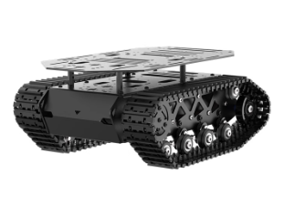

Since last year, the robotics industry has been
booming, with significant advancements in AI and machine
learning. New concepts and prototypes are emerging rapidly, making it an
exciting time to explore this field.
The life for a single person can be quite busy,
it’s really frustrating to come home after a long day and still have to
do chores like cleaning, cooking, and laundry.
My current job is flexible, but lacking
innovation. I want to work on something that challenges me and
allows me to learn new skills. I am approaching my 30s, and I don’t want
to end up a day in my 80s, with the same working routine, which is
happening to many people in my family. I know that we are
undergoing another industrial revolution, and I want to be part of
it.
Well then, why not give it a try?
Introduction to the
open-source projects
LeRobot -
aims to provide models, datasets, and tools for real-world robotics in
PyTorch. The goal is to lower the barrier to entry to robotics so that
everyone can contribute and benefit from sharing datasets and pretrained
models.
The SO-101 Robot Arms
XLeRobot:
Accidentally I came across this project that’s called XLeRobot and was
at once fascinated by it. It combines several existing LeRobot projects,
such as the SO101-Robot arm
and the LeKiWi
moving base, with an IKEA
RÅSKOG Trolley to create a mobile robot platform that can navigate
and manipulate objects in a domestic environment. I sent immediately a
direct message to the author of the project, @VectorWang. He answered me very
kindly and we found out even some mutual friends. I didn’t hesitate, but
ordered the IKEA trolley and started to collect all the necessary
parts.
The LeKiWi trying to catch a Kiwi.
The XLeRobot
Plan for the Project
How should it look like?
As the first step, I would follow up the tutorials and replicate
the robot in my home environment.
A very obvious problem in the current design is that the moving
base, which is driven by 3 omni-wheels and designed for a single robot
arm, provides too little momentum and ground clearance, which constrains
the robot’s ability to move around in a typical home environment.
Therefore, I would like to replace the moving base with a more robust
one, such as a tracked base or a four-wheel drive base.
A possible solution would be this Chasis from Taobao: 
What should it be able to do?
Movability: The robot should be able to navigate around the house,
avoiding obstacles and reaching designated locations.
Remote Control/Teleoperation: The robot base should be controllable
via a joypad or a mobile app. The 2 robot arms should be controllable
via the 2 corresponding followers. One future development could be a
standalone backpack remote control unit, which contains an IMU in
detecting the movement and 2 leader arms in controlling the robot arms.
These movements would be transmitted to the robot via WiFi or Bluetooth,
or even throgh WAN-based communication.
Detection: When not being remotely controlled, the robot should be
able to recognize and locate objects in its environment using computer
vision. Currently available: 2 cameras on the end-effectors, 1 camera on
the moving base, and possibly an additional depth camera.
Manipulation through VLA (Vision-Language-Action) models: The robot
should be able to perform simple tasks such as picking up objects,
opening doors, and pressing buttons based on natural language commands.
This would require the integration of VLA models that can understand and
execute instructions.
How am I going to
achieve everything? (Timeline)
Here is a timeline I have in mind:
Skills and knowledge I would need to acquire: - Robotics: Kinematics,
Dynamics, Control Systems - Computer Vision: Object Detection, Image
Processing - Machine Learning: VLA Models, Reinforcement Learning -
Hardware: RGB-D Camera, Raspberry Pi, Motor Controllers, Optional:
Jetson Nano - Software: ROS, Python, PyTorch, OpenCV
Set-ups and Configurations
First Procurement
The first procurement has been done on 2024-06-25 according to the Bill
of Materials.
Software Installation
I have installed dual boot Windows 11 and Ubuntu 24.04 on my laptop,
following the instructions from here.
For CAD design, I have installed Fusion 360, Shapr3D.
For programming, I have installed VS Code, Anaconda, Git, GitHub
Desktop.

 The LeKiWi trying to catch a Kiwi.
The LeKiWi trying to catch a Kiwi.